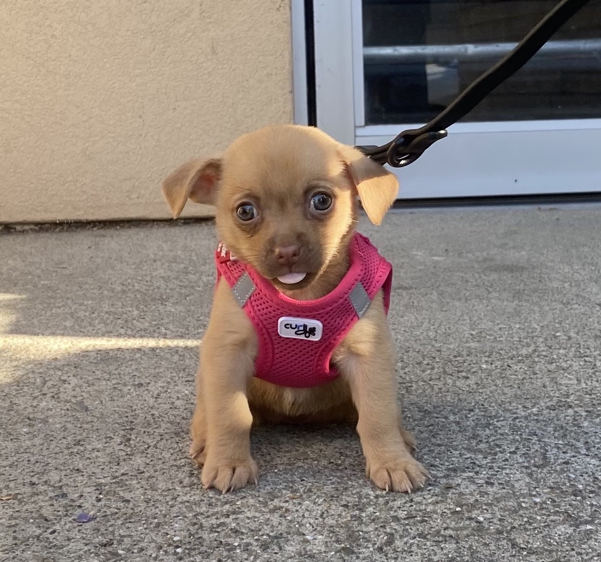
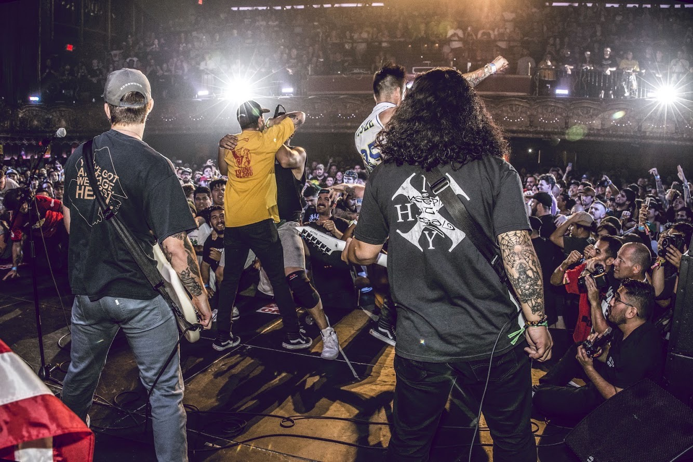
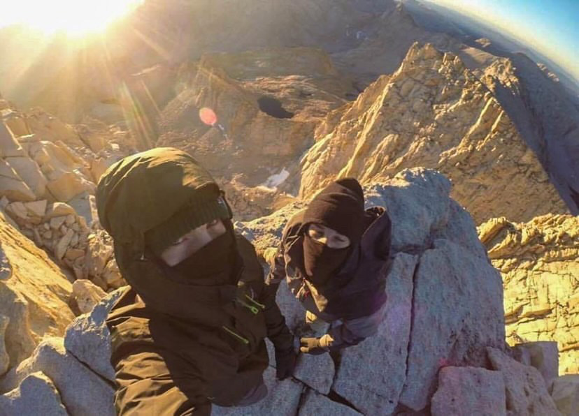

Brandon VanBuskirk
Berkeley, CA
bvanbuskirk@berkeley.edu
A life enthusiast, a robot and ML scholar, and a lover of a good cup of coffee.
A life enthusiast, a robot and ML scholar, and a lover of a good cup of coffee.
Instructing, tutoring and guiding about 800 students through Machine Structures, CS61C, covering: Operating Systems, Parallel Computing, C and Assembly Programming, CPU Data Path design, error-correcting codes and much more.
Students have four main projects:
Directly advised by Professor Ronald Fearing, I am leading a team of undergraduates to develop a network of underactuated, intelligent robots that cooperate to overcome tasks otherwise unattainable by a singular, well-equipped robot. This research is working to show that sample efficient reinforcement learning policies, like online Model Predictive Control and Model-Based Meta RL, provide the ability for a single model to not only generalize across inconsistencies between robots, but also allow for the robot to adapt to the environment and achieve tasks without need of system identification. Details on this are featured in the "Projects" section.
Under the NASA Big Idea Challenge, our team designed a lunar rover to operate in deep craters of the Moon without access to solar energy, using directed energy and dual cooperative rovers. Details on this are featured in the "Projects" section.
I spent four years traveling the world, playing music with my friends. Growing up listening to punk rock, I always dreamt of being in a band myself, but never expected that I would have the opportunity to travel as a result of it. Out of love for the music, we found a way to grow as an artist in a financially broken music scene, and pave our own path, eventually leading to US and international tours. This experience taught me a lot about the DIY mindset and is still a fundamental aspect of my identity today.
GPA: 3.6
GPA: 4.0
Outside of my regular work, I enjoy anything that gets me out of the house. Typically it's summitting a new peak, or swimming in the ocean. I also gravitate towards any sport that involves a ball, but mainly the white ones with red laces.
When I'm home, I love a good woodworking project. I've built my desk, entertainment center, benches and bedframes. Of course, most design choices are credited to my woodshop supervisor Cricket(featured below).
  
Compression: 240:1 (2.4MB to 10kB)
Takeaway: The goal of this wasn't to perfectly recreate the original video, but to find the limits of compression in which the recovered video is fairly close to the orginal but much much more efficient to transmit. This project taught me alot about communications and signal processing design. I had to learn many experimental video encoding techniques and made numerous experimental choices that ultimately did not improve my modellike PCA, frame differencing, motion detection, to name a few. But what's important is that I learned what works, and what doesn't, and how to take experimental concepts and apply them.
Link to Proposal Here.
Takeaway: This project posed many difficult challenges for our team to attempt to find solutions to. This project was a transformative experience for me as a Sophmore and taught me so much about insulation, power systems, optics, and design in general. We were ultimately eliminated from the challenge for having an overly ambitious design and righfully so. This was my first extracurricular research experience and showed me the beauty of space engineering and science for the first time.